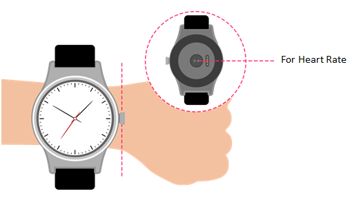

أسئلة شائعة حول الساعة التي تدعم تقنية Wifi
لا يمكن اكتشاف ساعة MOVETIME الذكية.
- قم بتشغيل Bluetooth في حالة تعطيله.
- قم بتمكين خدمة Bluetooth للبحث عن الأجهزة.
- أعد تشغيل ساعتك الذكية أو هاتفك إذا استمر تعذر عمل Bluetooth على الرغم من تشغيله.
- أعد تشغيل ساعتك الذكية أو امسح الساعة المقترنة من تطبيق MOVETIME وصفحة نظام Bluetooth بالهاتف أيضًا في حالة إقران ساعتك الذكية بهاتف آخر.
كيف يمكن الحصول على أدق النتائج لمعدل ضربات قلبك؟
للحصول على أدق النتائج، أحكم ربط ساعة WATCH حول معصمك. حتى في الظروف المثالية، قد يتعذر على ساعة WATCH إعطاء قراءة موثوقة لمعدل ضربات القلب لكل شخص. وفيما يتعلق بنسبة صغيرة من المستخدمين، يمكن للعوامل المختلفة أن تجعل من المستحيل إعطاء قراءة لمعدل
ضربات القلب. ويمكن لبعض الأمور أن تساعد WATCH في إعطاء قراءات مُثلى وأكثر اتساقًا لمعدل ضربات القلب:
- يجب أن يلامس الجزء الخلفي من ساعة WATCH البشرة.
- يجب إحكام ربط ساعة WATCH حول معصمك، ولكن يجب ترك مساحة صغيرة لتنفس بشرتك والسماح لأجهزة الاستشعار بالقيام بوظائفها.
- يمكنك إحكام ربط WATCH لإجراء التمارين وإرخاء ربطها بعد الانتهاء.
- لن تعمل أجهزة الاستشعار إلا إذا قمت بارتداء WATCH على الجزء العلوي من معصمك.
إذا لم تظل WATCH في مكانها أو تعذر قياس معدل ضربات قلبك، فأحكم ربط الحزام قليلاً. يجب ارتداء WATCH محكمة الربط ولكن بشكل مريح.

ماذا يمكنني أن أفعل عندما لا تستجيب ساعة WATCH لديّ؟
اضغط مع الاستمرار على مفتاح الطاقة لمدة 8 ثوانٍ لإعادة تشغيل WATCH. وهذا الإجراء مخصص للحالات الطارئة فقط.
لماذا تهتز WATCH لديّ أحيانًا بشكل غير متوقع؟
- تحقق مما إذا كنت قد تلقيت إشعارًا.
- تأكد من أن ساعة WATCH لديك ليست بعيدة جدًا عن جهازك.
ماذا يمكنني أن أفعل إذا لم يعمل الاهتزاز؟
- قم بالشحن وتأكد من أن البطارية بها طاقة.
- تأكد من أن الاتصال بين WATCH والجهاز ليس متقطعًا.
ماذا يمكنني أن أفعل عند عدم شحن WATCH لديّ؟
- تأكد من محاذاة الأسنان الموجودة في وحدة تثبيت الشحن مع الأسنان الموجودة في الغطاء الخلفي من ساعتك.
- تأكد من أنه تم إدخال كابل USB بإحكام في منفذ USB.
- في بعض الأحيان، إذا كانت بطارية ساعة WATCH لديك فارغة تمامًا، فإن الأمر يحتاج بعض الوقت لتنشيط البطارية والنظام.
لماذا يزداد استهلاك البطارية بعد تثبيت تطبيق MOVETIME وتوصيل WATCH بجهازي؟
هذا أمر طبيعي ويتضمن الاستهلاك:
- الحفاظ على الاتصال بين WATCH والجهاز.
- نقل الملفات بين WATCH والجهاز.
- قطع الاتصال ومسح الجهاز وإعادة الاتصال.
كيف يمكن توصيل العديد من أجهزة BT 4.0 Low Energy (BLE) بجهازي في الغالب؟
يمكن توصيل جهاز BLE واحد فقط بجهازي في الوقت نفسه.
ماذا يمكنني أن أفعل عند قطع اتصال WATCH عن جهازي كثيرًا؟
- تأكد من أن أداة النظام لم توقف تطبيق MOVETIME . وإذا كان قد تم إيقافه، فأعد تشغيله.
- تأكد من أن الاتصال بين WATCH وجهازك طبيعي.
أ) تحقق من تطبيق MOVETIME على هاتفك. في حالة اتصال WATCH بجهازك، سوف ترى رمزفي الزاوية اليمنى العلوية. وإذا أخفقت WATCH في الاتصال، فسيتغير
إلى
في منتصف الرمز.
ب) إذا شاهدت رمز Bluetoothعلى WATCH، فإن هذا يعني أن WATCH أخفقت في الإقران بجهازك

كيف يمكنني إجراء إعادة ضبط المصنع على ساعة WATCH لديّ؟
- إذا لم تحِل أي من الإجابات الواردة أعلاه مشكلتك، فجرب إعادة ضبط WATCH.
- في تطبيق MOVETIME. المس
ثم الساعة > الإعدادات > إعادة ضبط المصنع، وأعد ضبط WATCH.
- اضغط لفترة طويلة على مفتاح الطاقة لمدة 10 ثوانٍ لإعادة ضبط WATCH لديك.
ماذا يمكنني أن أفعل عندما لا تتلقى WATCH الإشعارات؟
لتمكين استلام WATCH إشعارات من MOVETIME، اتبع الخطوات أدناه.
- انتقل إلى تطبيق MOVTIME > الساعة > الإشعارات، وقم بتمكين الإشعارات من التطبيق المحدد المطلوب.
- قم بتمكين بدء تشغيل تطبيق MOVETIME تلقائيًا بمجرد تشغيل الهاتف.
- أضِّف تطبيق MOVEITME إلى القائمة البيضاء أو قائمة التطبيقات المحمية.
- أوقف تشغيل جميع إعدادات توفير الطاقة التي تعطِّل التطبيق عند قفل الشاشة.
- انتقل إلى الإعدادات > الإشعارات > الوصول إلى الإشعارات > MOVETIME (قد تختلف طريقة الوصول باختلاف العلامة التجارية). قم بتعطيل إشعارات MOVETIME، ثم قم بتمكينها مرة أخرى.
- أعد تشغيل هاتفك الذكي.
كيف يمكن مراقبة حالة النوم؟
قم بارتداء WATCH أثناء النوم وتأكد من تشغيل WATCH وتوفر طاقة كافية.
ماذا يمكنني أن أفعل عندما توجد مشكلة في اعتماد Wi-Fi في ساعتي؟
اضغط مطولاً على واجهة الإشعار المنبثق وامسح شبكة Wi-Fi الحالية، والمس WI-FI مرة أخرى، ثم أدخل الكود الصحيح في هاتفك.